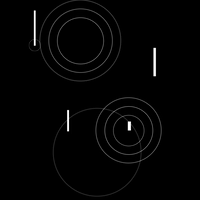
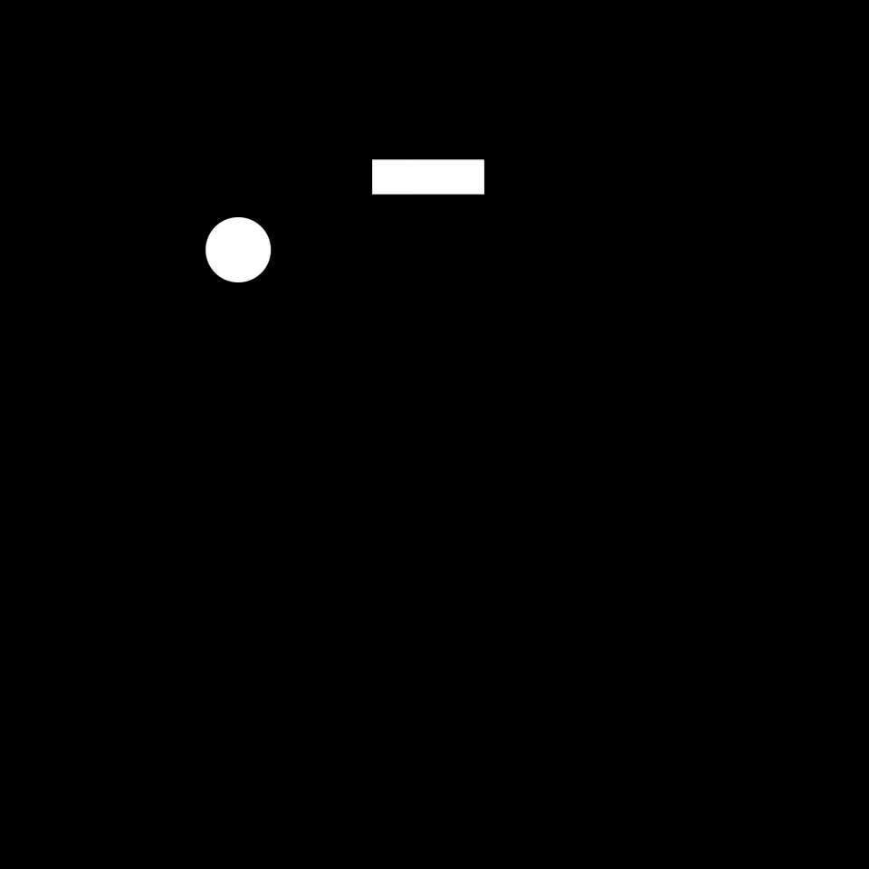

1. Getting started: how to draw vectors with the shape tool
Adobe After Effects offers a versatile shape tool for creating clean, scalable vector graphics. Simply choose a shape from the toolbar — rectangle, ellipse, polygon — and click-drag it onto the canvas. Each shape can be customized with stroke and fill options. This foundational step sets up your loop with flexible, crisp visuals perfect for animation.
2. How to animate the shapes
Once your shapes are created, it's time to bring them to life. In the timeline panel, expand the shape layer and use the Transform controls (position, scale, rotation, opacity) to keyframe movement. Looping comes from repeating or reversing keyframes, or using expressions like loopOut(). Even subtle animations add personality to your GIFs.
3. How to draw with the pen tool AND animate the points
The pen tool offers precision and artistic freedom. Click to create straight lines or drag for curves. After drawing, enable "Path" keyframes to animate each anchor point. This technique allows fluid, hand-drawn-style animations or morphing shapes. It's great for more expressive looping effects.
4. Experimenting with blending modes

Blending modes control how layers interact visually. Try "Add" or "Multiply" to create glowing or textural effects, especially with overlapping shapes. Use animated opacities and motion to make layers feel alive. Looping GIFs benefit from dynamic interactions that draw the viewer’s eye — blending modes amplify that.